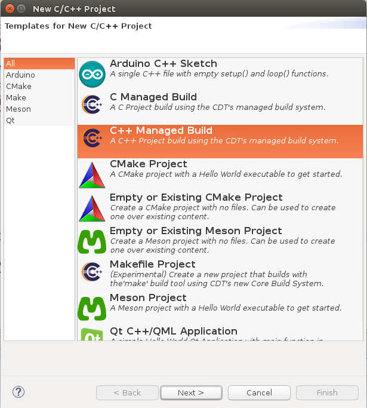
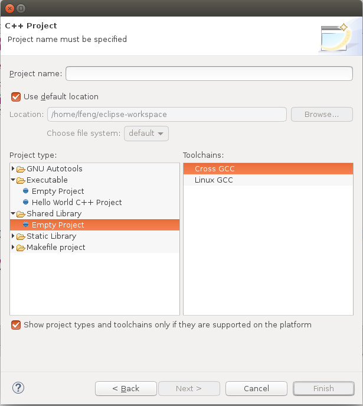
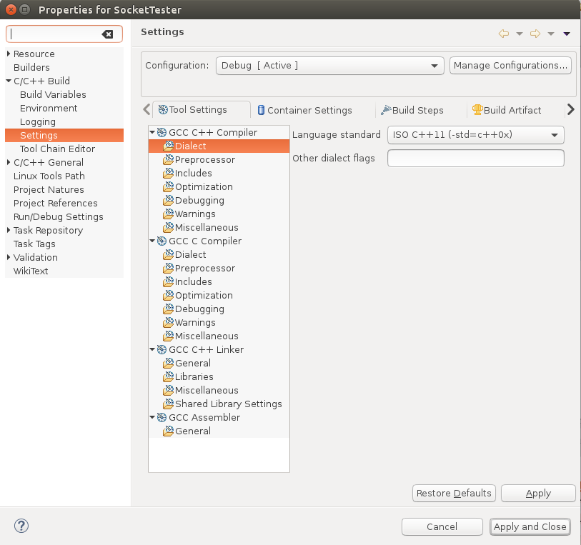
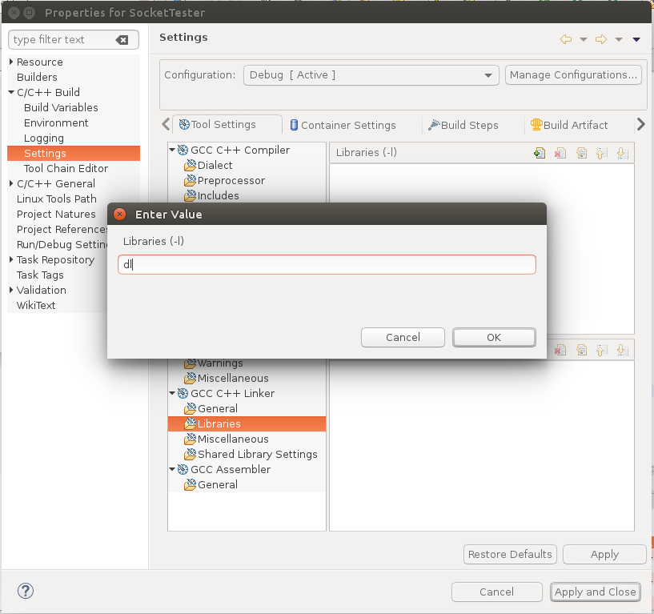

准备工作
安装java
1 | sudo add-apt-repository ppa:webupd8team/java |
安装eclipse
从eclipse官网下载Eclipse IDE for C/C++ Developers（下载链接），解压到自定义目录，要启动eclipse，双击自定义目录下的eclipse可执行文件即可。
创建项目
通过File->New C/C++ Project打开项目创建界面，选择C++ Managed Build；

点击Next，在Project Name中输入项目名称，Project Type中展开Shared Library，选择Emtpy Project，ToolChains选择Linux GCC，点Finish创建项目。

生成动态库
自行编写项目代码并进行编译，获得.so动态库文件。注意，导出的函数声明需要加上extern "C"，详细查看参考源2。
使用动态库
创建项目
创建另外一个项目，与创建项目步骤唯一不同的是，Project Type中展开Executable，选择Empty Project。
编写动态库加载代码，这里将动态库加载和卸载封装成一个类，如下ModuleLoader.h代码：1
2
3
4
5
6
7
8
9
10
11
12
13
14
15
16
17
18
19
20
21
22
23
24
25
26
27
28
29
30
31
32
33
34
35
36
37
38
39
40
41
42
43
44
45
46
47
48
49
50
51
52
53
54
55
56
57
class CModuleLoader
{
public:
bool LoadModule(const char* szModuleName)
{
m_pModule = dlopen(szModuleName, RTLD_LAZY);
if (m_pModule == nullptr)
{
return false;
}
m_pInterfaceFunc = (GET_INTERFACE)dlsym(m_pModule, "GetModuleInterface");
if (m_pInterfaceFunc == nullptr)
{
return false;
}
return true;
}
void* GetInterface(const char* szInterfaceName)
{
if (m_pInterfaceFunc == nullptr)
{
return nullptr;
}
return m_pInterfaceFunc(szInterfaceName);
}
void ReleaseModule()
{
if (m_pModule != nullptr)
{
dlclose(m_pModule);
m_pModule = nullptr;
}
}
const char* GetErrorDesc()
{
return dlerror();
}
private:
typedef void* (*GET_INTERFACE)(const char* szInterfaceName);
private:
void* m_pModule;
GET_INTERFACE m_pInterfaceFunc;
};
Main.cpp参考代码：1
2
3
4
5
6
7
8
9
10
11
12
13
14
15
16
17
18
19
20
21
22
23
24
25
26#include <iostream>
using namespace std;
#include "ModuleLoader.h"
#include "ISocketSystem.h"
using namespace SocketSystem;
int main(int argc, char* argv[])
{
CModuleLoader oLoader;
if (!oLoader.LoadModule("./libSocketSystem.so"))
{
cout << oLoader.GetErrorDesc() << endl;
return 0;
}
ISocketSystem* pSocketSystem = (ISocketSystem*)oLoader.GetInterface("SocketSystem");
if (pSocketSystem == nullptr)
{
cout << "GetInterface FAIL!" << endl;
return 0;
}
pSocketSystem->Create();
cout << "OK!" << endl;
return 0;
}
解决编译错误
nullptr was not declared in this scope
Properties->C/C++ Build->Settings->GCC C++ Compiler->Dialect，修改Language standard选项为IOS C++ 11(-std=c++0x)

undefined reference to ‘dlopen’
Properties->C/C++ Build->Settings->C/C++ Build->Settins->GNU C++ Linker->Libraries，在Libraries(-l)框中添加dl。
